Gift Sender Flow
Gift Sender Flow
Drizly wanted to prioritize gift sending as a top use case for the platform, but the current experience of sending a gift was clunky and required the user to make too make decisions in too many places. It also was not differentiated in any way from the non-gifting flow, so it didn't feel special.
Product Design
The Problem
The gifting flow was lacking personalization and very clunky for senders. There was a lot of confusion around entering recipient information.
The Solution
Add digital card selection, make recipient email optional, and streamline recipient info entry, reducing drop off in the checkout funnel.
Business Context
Going into 2022 & following the acquisition by Uber, Drizly decided to shift focus away from purely an on-demand, need-it-now, consumer and instead prioritize "non-core" modes of shopping, of which gifting was the top priority.
Objective: Deliver the Drizly experience consumers deserve.
Key result: Make Drizly a first choice for more shopping occasions - grow "non-core" orders to 1/3 of all gross bookings $.
Historically, gifting represented 20% of orders in December and 10% during the rest of the year. Drizly leadership set a goal of growing that percentage to 30% or higher, making it a key pillar of the business.
Gifting-specific goal: Establish Drizly as the go-to platform for BevAlc gifting by delivering a best-in-class gifting experience for senders + recipients.
- Evolve consumer gifting experience (solve existing friction points + improve end-to-end process)
- Build program enhancements (incl. product features + non-tech initiatives) inspired by consumer + competitive insights
- Unlock sender retention + recipient conversion opportunities
TLDR; burn it down
"We use the words "non-core" to focus on how we make it obvious in everything we do that Drizly is about more than the convenience of delivery. This is THE challenge; building Drizly to be the preferred destination for shopping the unique category that is alcohol. We have to think big and take some big product, ops, and marketing swings in this pursuit: our branding, our copy, our creative, our level of customer support, in which retailers Drizly will work with and service levels we'll now tolerate, and most importantly, in what our product demonstrates to consumers. We cannot afford to get 2% better across everything we do if we're to be successful -- we need to pick 1-2 product directions and get 5x better."
Team
Product Designer (Me)
Product Manager
Data Analyst
UX Researcher
Engineers (4)
Competitive Landscape
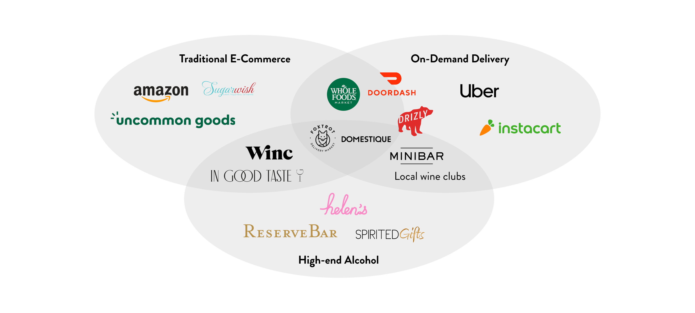
I examined the competitive landscape of gifting online, including traditional e-commerce, high end alcohol, and on demand delivery.
Comeptitor/Comparator Analysis
Research objective: Find out what consumers like, dislike, want, and struggle with when going through the gifting experience on our site and competitor sites
Key research questions:
- Do people want to be able to send personalized gifts?
- Are people willing to pay for personalized gifts (gift wrap, notes, etc.)?
- What is clear and/or confusing about the gifting experience?
- Do people engage or care about add-ons?
- Mixed gift bags vs. one item?
Method: Unmoderated user study conducted on UserTesting.com's platform.
Participants: 5 total - 3 male, 2 female
No. 1
Reserve Bar’s add-ons are interesting but not really worth it
No. 2
Gift presentation matters and people will pay for it
No. 3
People like gifting alcohol with other products
Inspiration
For inspiration I looked at both alcohol and non-alcohol experiences, ranging from traditional e-commerce to on-demand delivery platforms. There was an interesting mix of up-front gift selection and functional checkout inspiration.
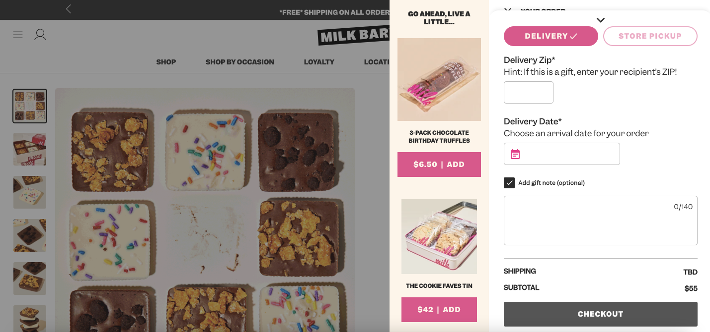
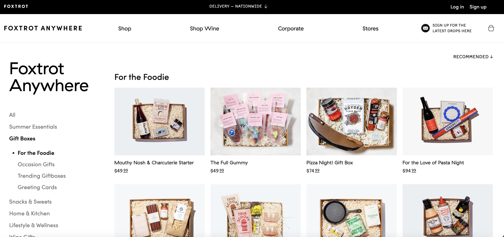

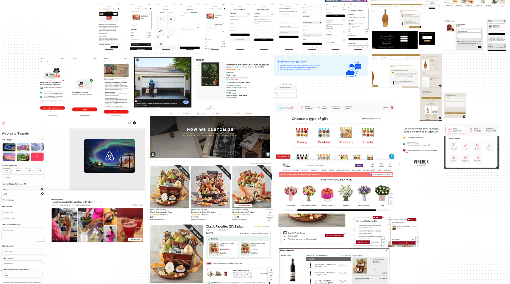
This is also what the inside of my brain looks like...
Existing experience
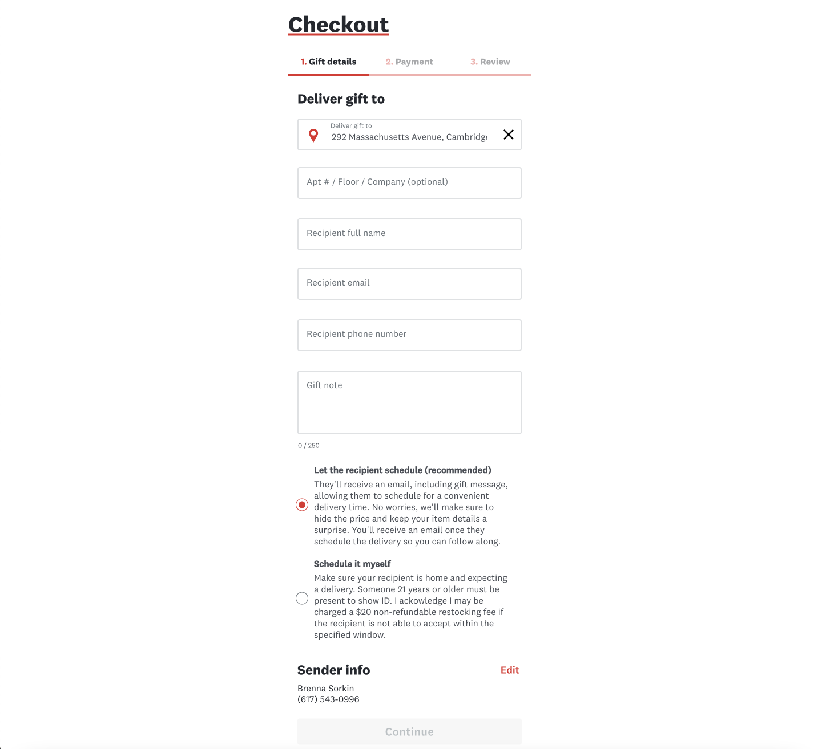
The existing checkout flow required users to know both the email and phone number of their recipient and it split the recipient info into confusing sub-steps, leading to a large drop off in the checkout funnel at this step. It also allowed senders to choose between letting the recipient schedule the delivery and a "surrpise delivery," which has been known to cause numerous customer service issues when recipients don't end up being home.
The iOS experience suffered from the same issues, albeit in a different order. The sender information was grouped with the gift note for the recipient, which led to senders mistakenly entering their own info in the recipient info.
Data
Examining the data around gift sending revealed that gifting has grown as a percentage of orders YoY, but that the contact rate was high, indicating users having issues with the experience. We also saw that gift senders weren't returning to the platform and that recipients weren't converting to be customers themselves.
60% / 40%
Split of gift orders placed on web vs apps (vast majority iOS)
14%
Of gift senders enter their own email address as the recipient's.
2-3x
How much higher the contact rate is on gifts vs non-gifts
35%
Gift orders where it's the users first Drizly order (vs 11% non-gift)
Only 6.7%
First time gift senders who repeat (19.5% for non-gift)
Only 2.7%
Gift recipients who place their own order within 90 days
Pain point analysis
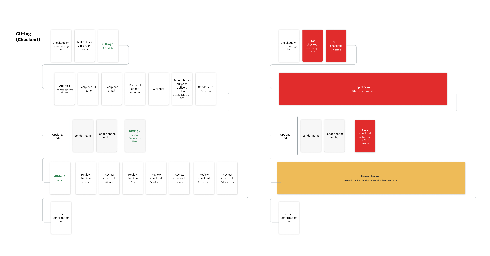
I mapped out the existing flow for users marking their order as a gift in checkout, showing the pain points where users are directed away from checkout and forced to go backwards to enter recipient information before proceeding. In cases where they have to change the address, they may be forced all the way back to cart. We also found evidence that people may know their friends' or families' phone numbers, but not their email addresses.
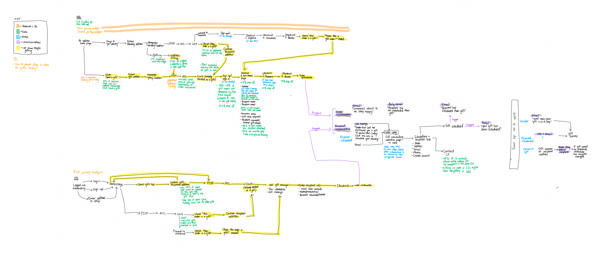
Detailed flow with supporting data.
Key problems
Based on the data and input from key stakeholders, I identified a handful of key problems. Many of them are addressed in this work, but some are covered in other projects.
Difficult to enter recipient info
Users are confusing their info with recipient info, and they don't know the recipient's email address (14%).
Recipient not home
When an order is a surprise, the recipient is often not home to collect (they need to show ID).
Unclear expectations
Part of the reason recipients aren't home is because we don't clearly explain the process.
Impersonal experience
Nothing differentiates the gifting experience from regular shopping.
Sender decision fatigue
Gift senders don't know what to buy for their intended recipients.
Poor delivery presentation
When the gift shows up it's either wrong or not wrapped nicely.
Brainstorm
I facilitated a virtual brainstorming session that involved stakeholders and subject matter experts from all across Drizly, including members of leadership and CX representatives, in order to paint a complete picture of gifting.
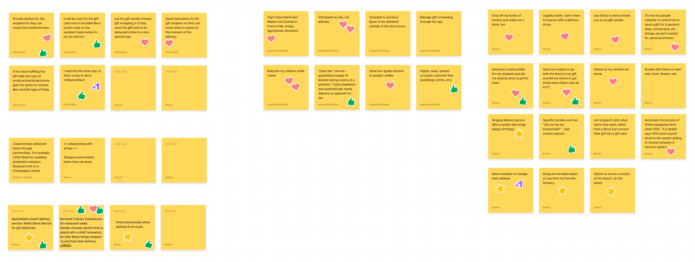
Affinity Diagram
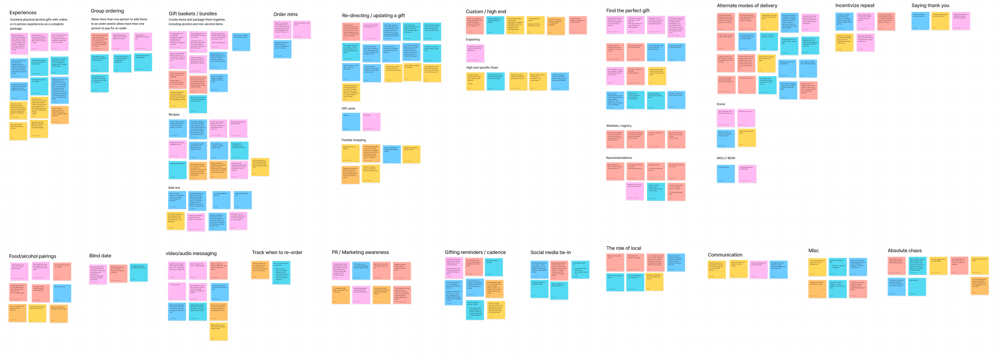
New ideas were thought of and expansions to existing concepts were explored. Stakeholders all felt that they were able to influence the direction of gifting and the solutions generated were used to inspire / guide planning conversations for future states.
Opportunity Areas
Building off the key problems, after the braintorm I identified many areas of opportunity. Again, not all of them are reflected in this project, but all are in flight one way or another.
Streamline recipient info entry
Group similar information for ease.
Digital occasion cards
Allow users to include a card with their gift note.
Remove surprise gifts
Make all gifts recipient scheduled.
Make email optional
Only require recipient phone number.
Collect gifting intent sooner
Allows us to tailor the shopping experience.
Recipient experience
Make it easier to schedule gift orders.
Shop by gift occasion
Find products for certain gifting reasons.
Personalized gifting quiz
Find the exact right gift for somebody.
Designs
Dovetailing off the streamlined checkout work, I wanted to simplify the gift sending process into 1 single step users could easily understand. I organized the info into recipient info, sender info, and order execution. We also added the digital occasion card selection, and removed the option for surprise gifts. Lastly, email address was made optional. You can view this work live on www.drizly.com when you send a gift.
Early drafts
Initially I thought about separating the gifting info from the checkout step, making it an interstitial space between cart and placing the order. The idea was to avoid confusion between the recipient info and the sender info and make the review step truly just "review," with no actions needed.
Ultimately this version felt convoluted when the user needed to make any edits to their selections, where on iOS it was more natural to go backwards, on web it felt clunky and disjointed. User research also showed that people were frustrated with the number of discrete steps, so I made the choice to integrate all the info into one page, organized by type of information.
Final designs
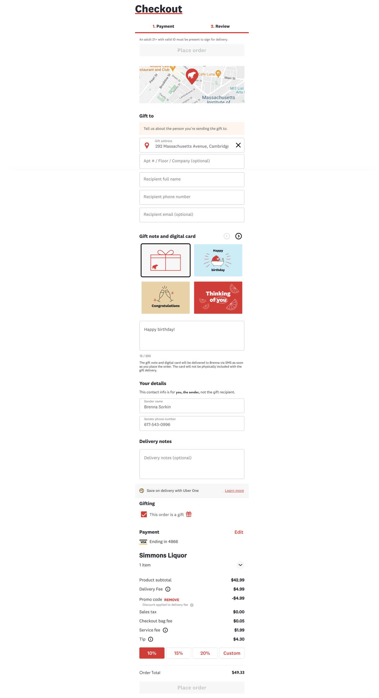
Results
10%
Reduction in drop off relating to gift details
3.3%
Reduction in drop off across the review step
~$2 million
Added value on web alone.
Due to timeline constraints and confidence in the changes (largely spurred by the success of streamlined checkout), we did not A/B test this feature. Our data analytics team has not yet completed formal analysis, however back of the napkin math comparing the month before this launched and the time since seem to indicate a decrease in drop off rate during our checkout funnel.
10 mins
Time it took before first card sent
6,083
Number of cards sent in the first 2 weeks
40%
Rate at which a non-default card is chosen
We immediately saw people begin to use the digital cards in the new sender flow. Every single card has been selected (beer the least often, as it's hardly ever gifted, fun fact) and sentiment analysis of the gift messages indicate people are choosing the "correct" matching card for their occasion. We also saw a reduction in void rate when we removed surprise gifts. We did not directly A/B test the changes to the sender flow, but the performance of the cards seems to indicate it's being well utilized.
Related projects

Digital Occasion Cards
Graphic & Brand Design
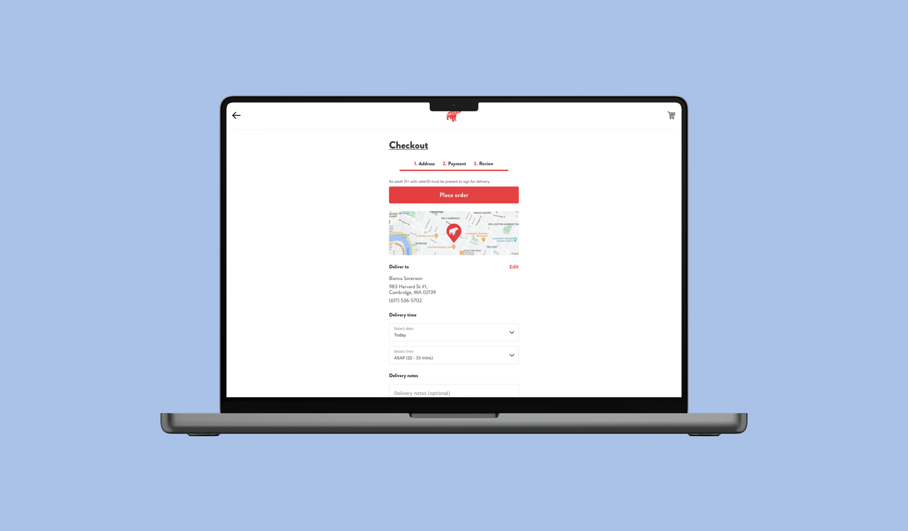
Streamlined Checkout
Product Design